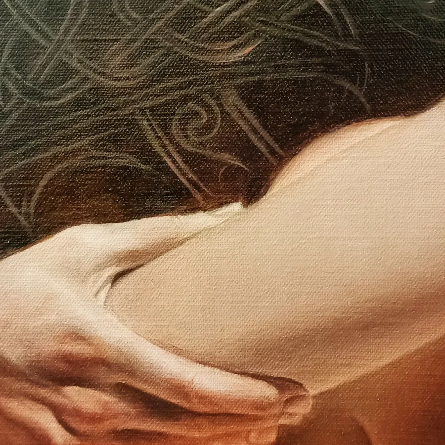
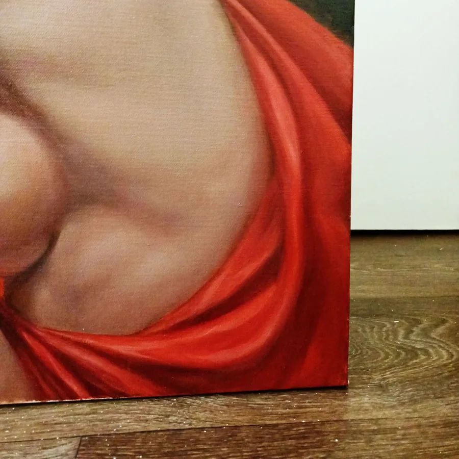
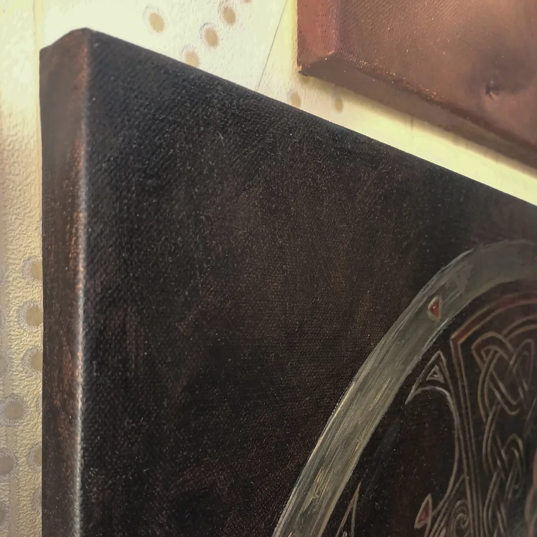

50 × 70 cm
50 × 70 cmAphrodite Awakening
Available- Worldwide free delivery
- 7-day returns accepted
Figurative · 2020
 80 × 70 cm
80 × 70 cmOriginal artwork
Boudicca presents a seated female figure turning back toward the viewer in a composition charged with historical atmosphere. Wavy light-brown hair catches the side light, while vivid red drapery gathers around the lower figure and leads the eye toward a large circular shield. Its Celtic-inspired pattern provides a clear visual anchor without overwhelming the human presence. Warm reds, oranges, and earthen browns emerge from a dark background, giving the scene depth and a sense of contained intensity. The diagonal pose introduces movement, yet the direct glance restores balance and authority. Painted in oil on linen, the work joins romantic realism with contemporary historical figurative art, emphasizing light, texture, and character rather than literal reconstruction. This original oil painting will interest collectors drawn to warrior imagery, Celtic art, classical realism, and strong female subjects. At 80 × 70 cm, Boudicca has enough scale to hold a prominent wall while retaining the intimate detail of a carefully observed portrait.
Acquisition price$1,950Available


